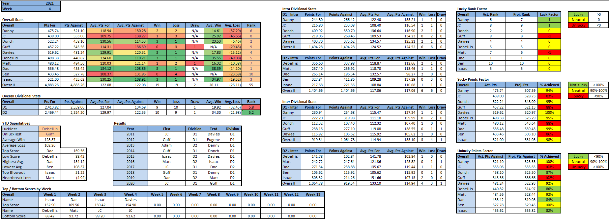

Power Rankings
WEEK 4 POWER RANKINGS
What’s feathers got to do with it
- Dac (+1): Dac catapulted into first place this week after taking down the previous greatest fantasy manager of all time, Isaac. David Montgomery proved to be a worthy trade acquisition (for week 4 anyway) as he had his best game of the season with 23 points. Deebo Samuel also decided that he should have his best game ever in order to really crush Isaac’s hopes and dreams. Dac heads into week 5 as the leader in the clubhouse, with 2 of the top 3 WRs, and about to face a guy who couldn’t beat the terd.
- Donch (+1): Donch’s hot streak continues as he picked up his 3rd win in a row after his narrow defeat in week 1. Ekeler and Jim Rob are as dynamic a starting RB duo as any, and Donch has plenty of RB depth as well, except he likes to keep them and all their points on his bench. Donch’s bench alone would’ve almost beat JC this week, which doesn’t say a whole lot about the managerial prowess of either of them.
- Isaac (-2): Isaac’s Thursday started as they always do, with hurt and despair as he got drastically outscored in TNF as his starter suffered a game (and/or season) ending injury in the first quarter for the second week in a row. Apart from the Buffalo D, nothing else went well for Isaac. The Bills offense scored 40 points, with Josh Allen getting very few of those due to 4 redzone field goals and a vulture by NVP Mitch Trubisky. KHunt was Isaac’s only offensive player to beat projections, but even his efforts were completely neutralized by one 76 yard Deebo Samuel TD, notching back to back weeks Isaac has faced a 70+ yard scoring play and complained about it.
- Davies (-): Davies beat the snot out of Danny this week, proving Yahoo’s fake news ranking of Danny at the top of D1 was a total joke. Davies’ starting WR put up almost 72 points between the two of them, which is a non fact checked league record. Davies’ weekly score was the second highest point total of the year, and Davies did it with a starting RB scoring 0.3 points. Davies has 0 RB depth and probably the worst starting RBs in the league, but at the rate he’s going, it won’t matter.
- Debellis (-): Debellis captured his 3rd consecutive victory to tie him for the longest active win streak. He will, however, have a tough matchup against Donch this week who has an impressive three game win streak of his own. Derrick Henry has continued to be as advertised, as he added another 25 points this week. He did make a wise move acquiring Jalen Hurts, but an equally dumb move starting infamous anti-vaxxer and 2.6 pt getter Cole Beasley.
- Danny (-): Danny’s fraudulent team lost by 37 points to Davies this week, as old man Tom failed to single handedly carry Danny’s team to victory. Saquon returned to doing Saquon things, but it wasn’t enough to make up for shortcomings in other areas. Danny managed to carry 2 defenses which both scored 3 points this week which was rather impressive. A matchup against the current Terd this week will be the true test to see if Danny can leave his terdy ways.
- Matt (+1): If a tie is like “kissing your sister,” then tying the terd is like kissing your sister, mom, and grandma all at the same time. Matt did the unthinkable this week, failing to defeat the terd after only needing 3.91 points in MNF to win and getting 3.90 points. Mahomes scored 42, Diontae Johnson added 22, and Matt still couldn’t beat the worst team in the entire league. Matt may not have been re-terd last year, but he’s looking like a strong candidate to three-peat the terd bowl.
- JC (-1): The saying goes, “the bigger they are, the harder they fall,” and JC is BigAsShit and falling hard. JC’s team is in (Abella) danger of missing playoffs, as he’s getting pounded from both ends with 2nd lowest points for and most points against. Miles Sanders was sadly not the savior JC wanted or expected him to be, so it’s going to take a lot of luck and skill to dig JC out of this giant hole he’s in, but if anyone can do it, JC can.
- Guff (+1): Guff somehow managed to pull a 135.32 point week out of his derty butt to tie Matt this week, making it his best result of the year so far both in points and outcome. DJ Moore is the truth, while 2 of Guff’s 7 RB1s, Najee and JTT, also had stellar weeks. Guff’s 0 points TE performance was all that stood between him having the league’s first tie in history and his first and possibly only win of the year. A matchup with RST and terdiffic Danny next week has the potential to be similarly nerve wracking.
- Ben (-1): Ben’s team is in utter freefall as he’s managed to score fewer points in each consecutive week. No one knows how low he can go, but judging by the depths of his previous rock bottoms, he’s just getting started. Ben’s team is made up of 2018 studs who are now 2021 duds. Hopkins, OBJ, Chris Carson, Melvin Gordon, and Kittle all scored single digits in week 4. This upcoming week while Ben’s team is scoring singles, he’ll at least be throwing enough singles to forget about it.
